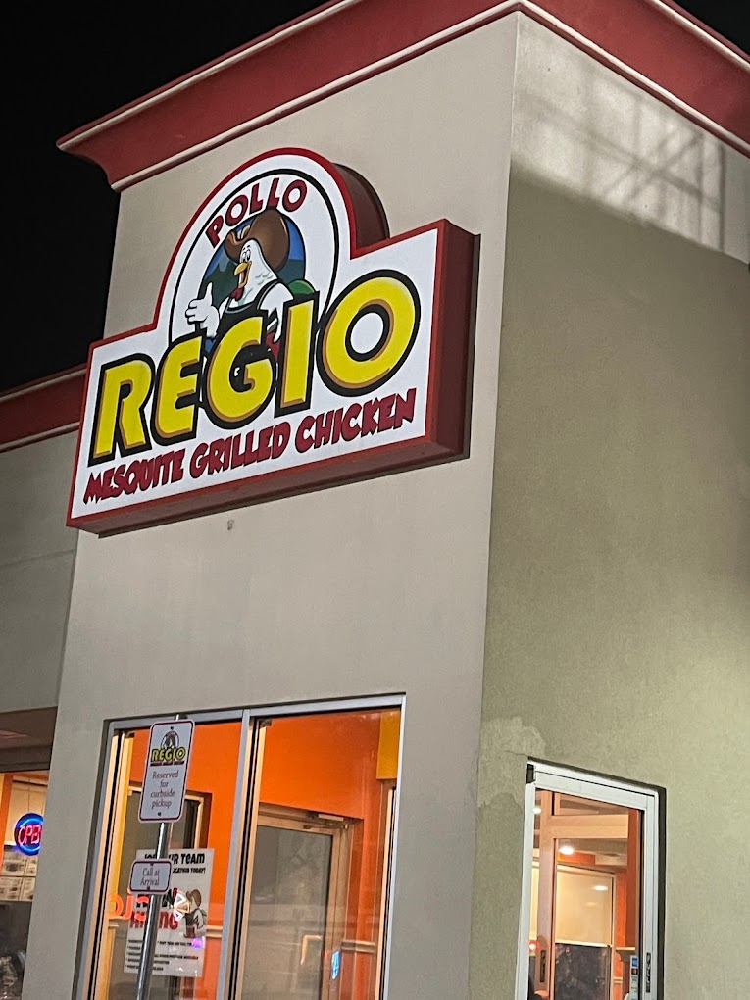
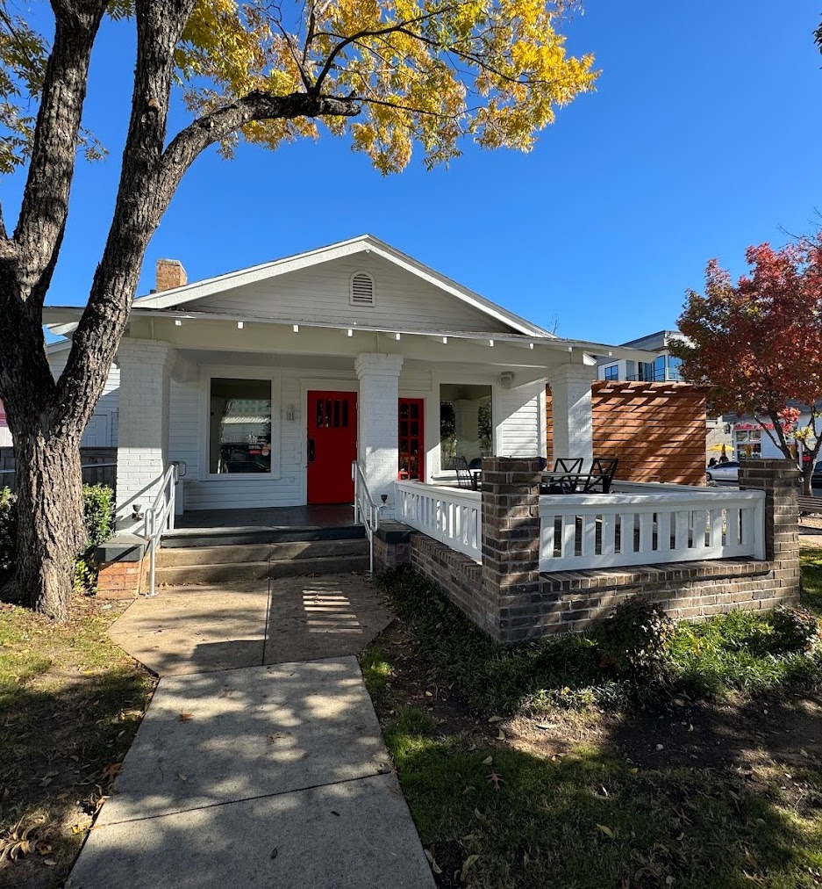

Journal
Food
Costa Vida

Favorite Dish(es): Sweet Pork Burrito, Chips & Queso
Hongthong Cafe
Favorite Dish(es): Thai Basil Chicken, Pad Thai, Taro Boba Smoothie
Pho Thien Y

Favorite Dish(es): Combination Pho, Pork Spring Rolls, Banh Mi, Chicken Fried Rice
Chicken Salad Chick

Favorite Dish(es): Sassy Scotty, Fancy Nancy
Slim Chicken
Favorite Dish(es): BBQ Wings
SWAD

Favorite Dish(es): Butter Chicken, Lamb Tikka Masala
Jersey Mike’s

Favorite Dish(es): Chicken Big Kahuna (w/ Bacon), Club Sub (no Mayo)
Taste of Thai
Favorite Dish(es): Green Curry, Crab Ragoon, Corn Patties, Sticky Rice & Mango, Coconut Ice Cream
Chick-Fil-A

Favorite Dish(es): 30 Count Nuggets (To Share), Chicken Deluxe Sandwich (w/ Bacon)
Tiger Donut

Favorite Dish(es): Jalapeño Kolaches, Custard Filled Donuts, Donut Holes
Salad & Go

Favorite Dish(es): BBQ Ranch Wrap/Salad (w/ Sweet Potatoes), Cold Brew, Blueberry Basil Lemonade
Taste of Asia
Favorite Dish(es): Orange Chicken (Extra Crispy), Teriyaki Beef (Extra Crispy), Crab Ragoon, Lucky Roll, Fried Rice (Side)
Pollo Regio

Favorite Dish(es): Half Chicken (Extra Rice)
Cane Rosso

Favorite Dish(es): Honey Bastard, Burrata & Cherries
Boca 31

Favorite Dish(es): Chicken Al Pastor (Tacos or Rice Bowl), Nutella Empanadas, Guava & Cream Cheese Empanadas, Fried Plantains
Los Molcajetes

Favorite Dish(es): Chicken Mole, Sopapillas
Doc’s Food Store

Favorite Dish(es): Pastor Tacos
First Watch

Favorite Dish(es): Fresh Juices, Market Hash
Chan’s Mongolian Grill

Favorite Dish(es): Stir Fry (DIY)
Twisted Root Burger Company
Favorite Dish(es): Bison Burger
Mellow Mushroom

Favorite Dish(es): Holy Shitake
HK Sushi

Favorite Dish(es): Louisiana Roll, Happy Roll
Itoko Sushi & Ramen

Favorite Dish(es): Takoyaki, Chicken Tariyaki Bowl, Tonkotsu Ramen, Geisha Roll, Tears in Heaven Roll
Calabrese

Favorite Dish(es): Tiramisu
Bosses Pizza

Favorite Dish(es): Hot Chick
Koracha

Favorite Dish(es): Green Curry, Duck Basil
Gustos Burgers

Favorite Dish(es): (Haven’t Been Here Yet - Was Recommended)
Aw Shucks

Favorite Dish(es): Crab Legs
Revolver Taco Lounge
Favorite Dish(es): Lengua Tacos, Al Pastor Tacos
Desserts
Melt
Favorite Dish(es): Dark Chocolate, Peanut Butter Explosion
Guanajuato Bakery
Favorite Dish(es): Pumpkin Empanadas, Conchas, Shortbread
Las Delicias de Michoacan

Favorite Dish(es): Fresas con Crema, Mangonada
The Cheesecake Factory

Favorite Dish(es): Godiva Chocolate Cheesecake, Ultimate Red Velvet Cake Cheesecake
Drinks
Swig

Favorite Dish(es): Polar Punch (w/ Strawberry Puree & Boba)
Race Street Coffee
Favorite Dish(es): Vanilla Latte (w/ Oat Milk), Sweater Weather Latte (w/ Oat Milk), Salted Caramel Latte (w/ Oat Milk)
Main Squeeze
Favorite Dish(es): Vision, Youth, Alive, Protein Punch (w/ Blue Majik)